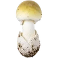

Plant Grimoire

AmanitaMagickal Properties
Powers: Visions, Prophecy
Varieties
Two species are referenced in magickal tradition. Amanita phalloides, the Death Cap or Death Angel, is a white fungus and among the most deadly of all known mushrooms. Amanita muscaria, the Fly Agaric, is the iconic red-and-white spotted toadstool and is hallucinogenic, though still poisonous.
Magickal Uses
Fly Agaric is identified with the soma of European and Siberian legend, the sacred visionary substance consumed by shamans and spiritual leaders to produce states of ecstasy and prophetic sight. Its use was confined to initiates trained in its preparation and dosage. It was brewed into a tea and drunk directly before admission to certain secret rituals worldwide. The Death Angel has no safe application in practice.